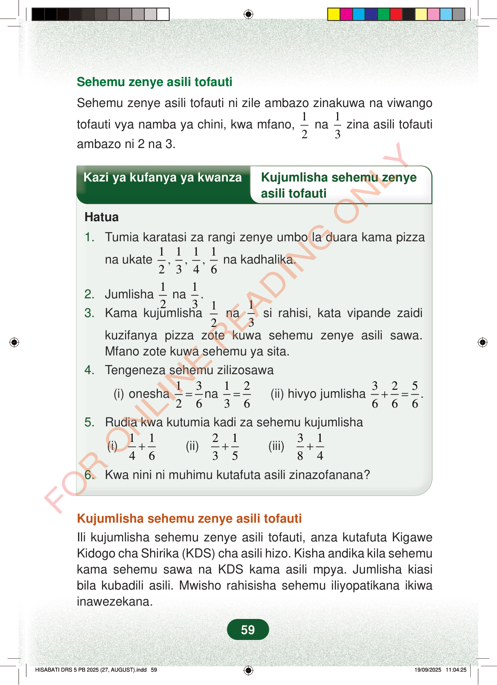

Sehemu zenye asili tofautiSehemu zenye asili tofauti ni zile ambazo zinakuwa na viwangotofauti vya namba ya chini, kwa mfano,12na13zina asili tofautiambazo ni 2 na 3.Kazi ya kufanya ya kwanzaKujumlisha sehemu zenyeasili tofautiHatua1.Tumia karatasi za rangi zenye umbo la duara kama pizzana ukate12,13,14,16na kadhalika.2.Jumlisha12na13.3.Kama kujumlisha12na13si rahisi, kata vipande zaidikuzifanya pizza zote kuwa sehemu zenye asili sawa.Mfano zote kuwa sehemu ya sita.4.Tengeneza sehemu zilizosawa(i) onesha1326=na1236=(ii) hivyo jumlisha325666+=.5.Rudia kwa kutumia kadi za sehemu kujumlisha(i)1146+(ii)2135+(iii)3184+6.Kwa nini ni muhimu kutafuta asili zinazofanana?Kujumlisha sehemu zenye asili tofautiIli kujumlisha sehemu zenye asili tofauti, anza kutafuta KigaweKidogo cha Shirika (KDS) cha asili hizo. Kisha andika kila sehemukama sehemu sawa na KDS kama asili mpya. Jumlisha kiasibila kubadili asili. Mwisho rahisisha sehemu iliyopatikana ikiwainawezekana.59
Sehemu zenye asili tofauti
Sehemu zenye asili tofauti ni zile ambazo zinakuwa na viwango
tofauti vya namba ya chini, kwa mfano, 1
2 na
1 3 zina asili tofauti
ambazo ni 2 na 3.
Kazi ya kufanya ya kwanza Kujumlisha sehemu zenye
asili tofauti
Hatua
1. Tumia karatasi za rangi zenye umbo la duara kama pizza
na ukate 1
2 , 1 3 , 1 4 , 1 6 na kadhalika.
2. Jumlisha 1 2 na 1 3 . 3. Kama kujumlisha 1 2 na 1 3 si rahisi, kata vipande zaidi
kuzifanya pizza zote kuwa sehemu zenye asili sawa. Mfano zote kuwa sehemu ya sita. 4. Tengeneza sehemu zilizosawa
(i) onesha 1 3 2 6 = na 1 2 3 6 =
(ii) hivyo jumlisha 3 2 5 6 6 6 + = .
5. Rudia kwa kutumia kadi za sehemu kujumlisha
(i) 1 1 4 6 +
(ii) 2 1 3 5 +
(iii) 3 1 8 4 +
6. Kwa nini ni muhimu kutafuta asili zinazofanana?
Kujumlisha sehemu zenye asili tofauti Ili kujumlisha sehemu zenye asili tofauti, anza kutafuta Kigawe Kidogo cha Shirika (KDS) cha asili hizo. Kisha andika kila sehemu kama sehemu sawa na KDS kama asili mpya. Jumlisha kiasi bila kubadili asili. Mwisho rahisisha sehemu iliyopatikana ikiwa inawezekana.
59
Kazi ya kwanza ya kujumlisha sehemu zenye asili tofauti. Ina hatua za kutumia miduara ya karatasi, kubadili 1/2 na 1/3 kuwa 3/6 na 2/6, kisha kujumlisha hadi 5/6.Kazi ya kufanya ya kwanzaKujumlisha sehemu zenye asili tofautiHatua1.Tumia karatasi za rangi zenye umbo la duara kama pizza na ukate<math><mrow><mfrac><mn>1</mn><mn>2</mn></mfrac><mo separator="true">,</mo><mtext> </mtext><mfrac><mn>1</mn><mn>3</mn></mfrac><mo separator="true">,</mo><mtext> </mtext><mfrac><mn>1</mn><mn>4</mn></mfrac><mo separator="true">,</mo><mtext> </mtext><mfrac><mn>1</mn><mn>6</mn></mfrac></mrow></math>na kadhalika.2.Jumlisha<math><mfrac><mn>1</mn><mn>2</mn></mfrac></math>na<math><mrow><mfrac><mn>1</mn><mn>3</mn></mfrac><mi>.</mi></mrow></math>3.Kama kujumlisha<math><mfrac><mn>1</mn><mn>2</mn></mfrac></math>na<math><mfrac><mn>1</mn><mn>3</mn></mfrac></math>si rahisi, kata vipande zaidi kuzifanya pizza zote kuwa sehemu zenye asili sawa.Mfano zote kuwa sehemu ya sita.4.Tengeneza sehemu zilizosawa(i) onesha<math><mrow><mfrac><mn>1</mn><mn>2</mn></mfrac><mo>=</mo><mfrac><mn>3</mn><mn>6</mn></mfrac></mrow></math>na<math><mrow><mfrac><mn>1</mn><mn>3</mn></mfrac><mo>=</mo><mfrac><mn>2</mn><mn>6</mn></mfrac></mrow></math>(ii) hivyo jumlisha<math><mrow><mfrac><mn>3</mn><mn>6</mn></mfrac><mo>+</mo><mfrac><mn>2</mn><mn>6</mn></mfrac><mo>=</mo><mfrac><mn>5</mn><mn>6</mn></mfrac><mi>.</mi></mrow></math>5.Rudia kwa kutumia kadi za sehemu kujumlisha(i)<math><mrow><mfrac><mn>1</mn><mn>4</mn></mfrac><mo>+</mo><mfrac><mn>1</mn><mn>6</mn></mfrac></mrow></math>(ii)<math><mrow><mfrac><mn>2</mn><mn>3</mn></mfrac><mo>+</mo><mfrac><mn>1</mn><mn>5</mn></mfrac></mrow></math>(iii)<math><mrow><mfrac><mn>3</mn><mn>8</mn></mfrac><mo>+</mo><mfrac><mn>1</mn><mn>4</mn></mfrac></mrow></math>6.Kwa nini ni muhimu kutafuta asili zinazofanana?Maelezo ya kujumlisha sehemu zenye asili tofauti. Tafuta KDS, badili sehemu ziwe na asili moja, jumlisha, kisha rahisisha jibu ikiwezekana.